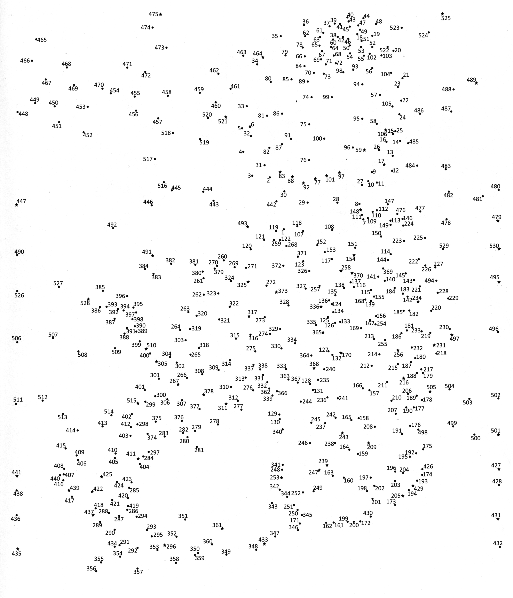

OCR Connect-the-Dots
This project uses Optical Character Recognition (OCR) to scan and animate connect-the-dots puzzles, transforming a familiar childhood activity into a computational exploration of sequence, recognition, and inscription.
